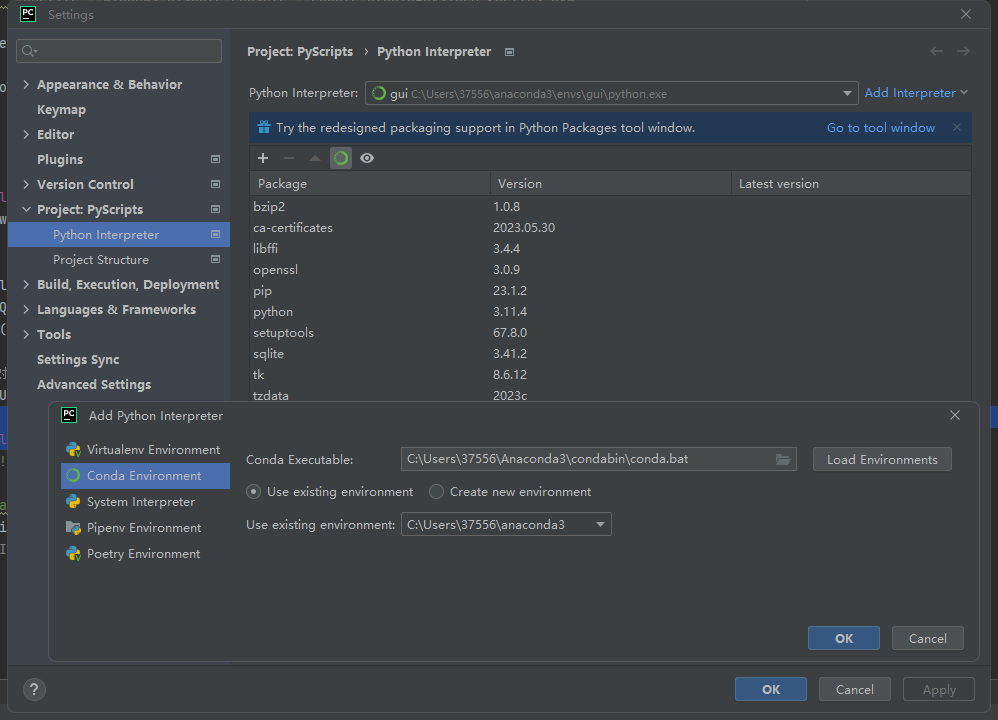
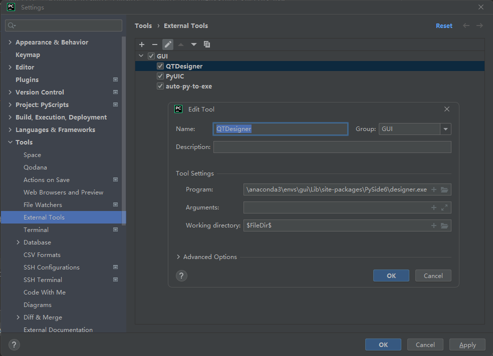
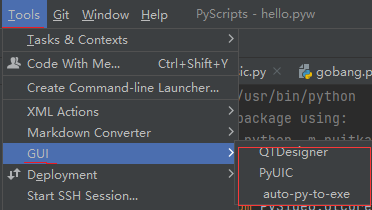
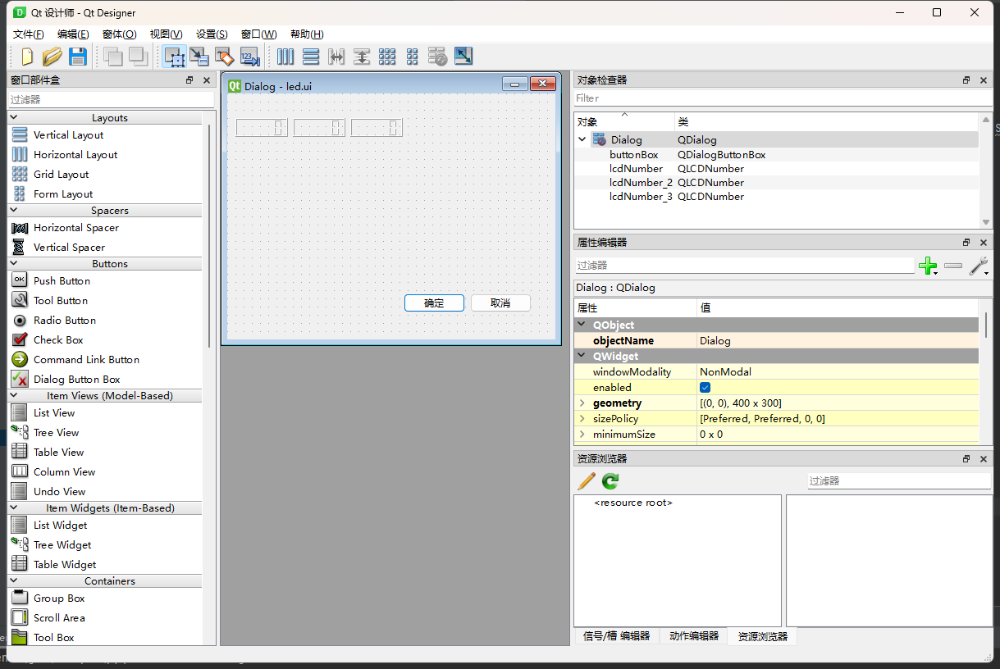
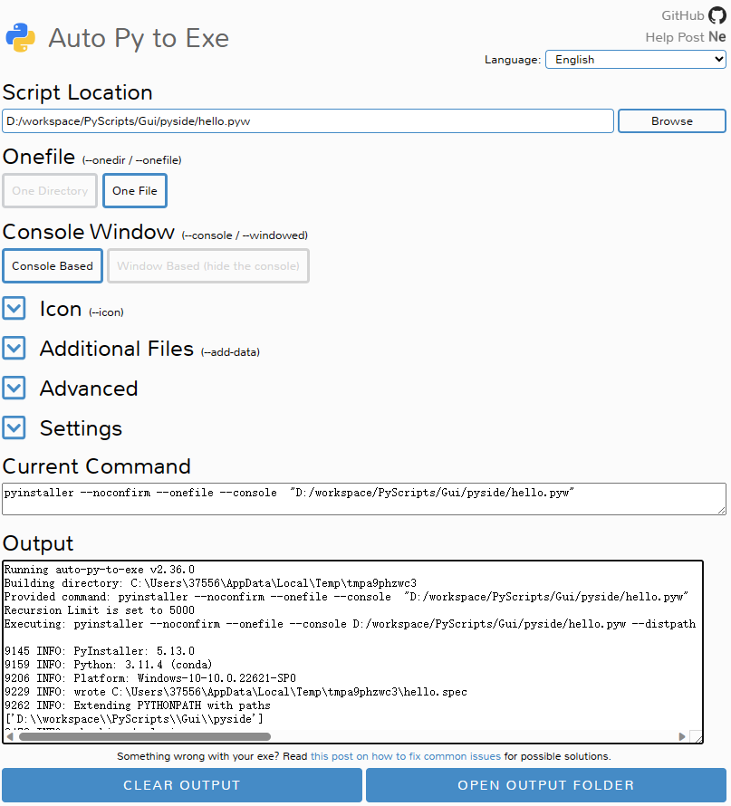
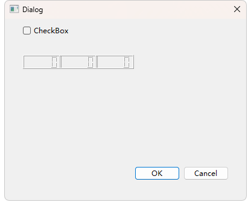

PySide6界面程序编写及打包
1. setup
- 安装Pyside6,建议使用tsinghua源anaconda | 镜像站使用帮助 | 清华大学开源软件镜像站 | Tsinghua Open Source Mirror
# 创建env
conda create --name gui
# 激活env
conda active gui
# 安装PySide6框架~
pip install --upgrade pip
pip install pyqt6-tools # 安装UI 设计工具，for QTDesigner, PyUIC
pip install pyside6
# +打包工具+
pip install pyinstaller auto-py-to-exe
-
设置pyCharm解释器

参考1 配置external Tools，在菜单中方便使用：目录类似:
-
C:\Users\37556\anaconda3\envs\gui\Lib\site-packages\PySide6\designer.exe -
C:\Users\37556\anaconda3\envs\gui\Scripts\auto-py-to-exe.exe


-
2 编写代码
2.1 打开QtDesigner,设计界面：
运行工具QtDesinger，设计一个界面led.ui

2.2 PyUIC 转换[可选的]
在Pycharm工程目录窗口选中led.ui，点击工具菜单的 PyUIC，会自动生成一个led.py，但是这个文件不能自动运行的，需要编写代码加载它。
注意千万不要在UIC生成的py代码加东西，防止你后面需要改ui.重新生成就白给了。
2.3 编写Main.py
有两种方式，一种是使用UIC生成的led.py，还有一种直接加载led.ui，推荐使用后面的，因为更简单：）
#!/usr/bin/python
import sys
from PySide6.QtWidgets import *
from PySide6.QtCore import QFile
from PySide6.QtUiTools import QUiLoader
from led import Ui_Dialog # led.py里面有一个UI_Dialog类
if __name__ == "__main__":
app = QApplication([])
win = QDialog() # QMainWindow QForm 等~
w = Ui_Dialog()
w.setupUi(win)
win.show()
app.exec()
#!/usr/bin/python
# 直接加载`led.ui`
#$ python -m nuitka --onefile --windows-disable-console --enable-plugin=pyside6 <hello>.pyw
from PySide6.QtWidgets import *
from PySide6.QtCore import QFile
from PySide6.QtUiTools import QUiLoader
class Window:
def __init__(self):
super(Window, self).__init__()
# 加载ui文件
qfile = QFile("led.ui")
qfile.open(QFile.ReadOnly)
qfile.close()
# 创建ui窗口对象
self.ui = QUiLoader().load(qfile)
self.ui.buttonBox.accepted.connect(self.btnClick)
def btnClick(self):
print("Hello!")
if __name__ == '__main__':
app = QApplication([])
# app.setWindowIcon(QIcon("logo.png")) # 添加图标
w = Window()
w.ui.show()
app.exec()
3 Package
运行工具auto-py-to-exe,进入网页界面，设置一下，点击CONVERT PY TO EXE会在工程目录下的output生成一个main.exe

愉快玩耍：
